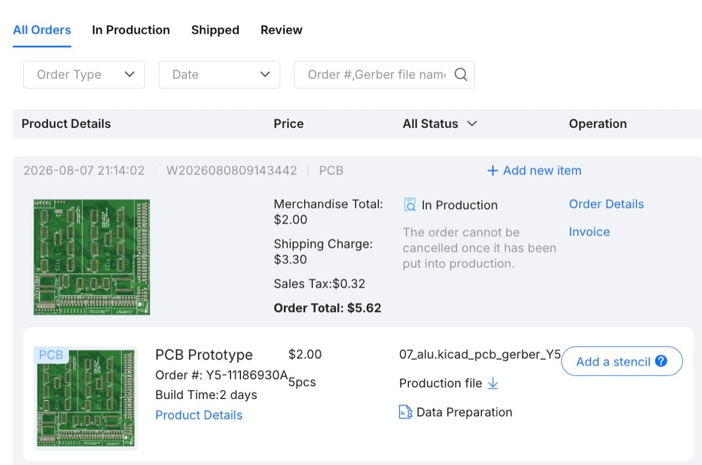
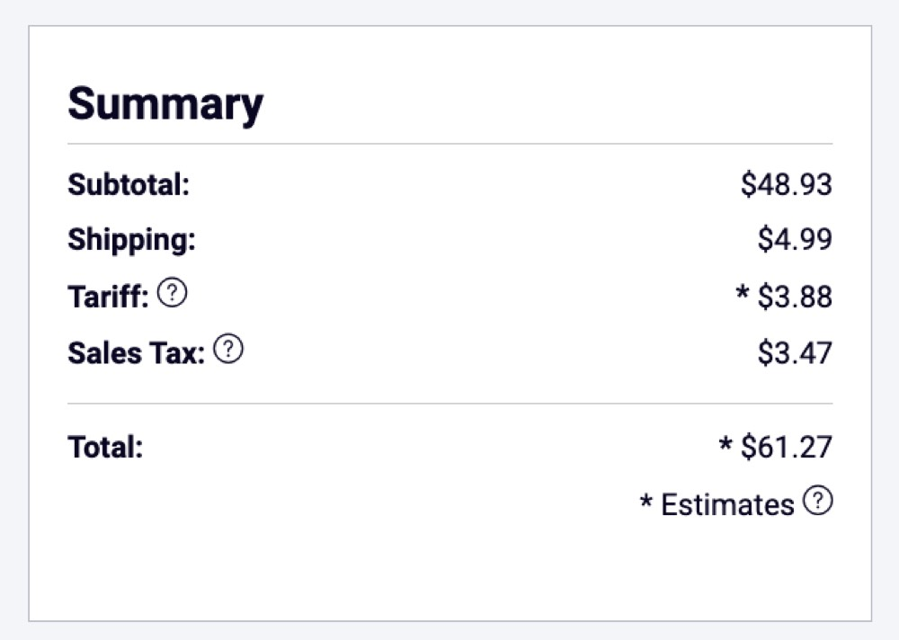

Dispatch · Copper
It is real. Tomato has left the screen.
Yesterday: bare boards on JLCPCB. Tonight: every IC, cap, LED, and SIP network on DigiKey — enough for two 07_alu slices.
After months of schematic churn, opcode tables, and the occasional 40-bit detour, the dual-LUT ALU is no longer a KiCad fantasy. Copper is being etched. Chips are in a warehouse in Minnesota. I am genuinely excited.


Fabrication
The existential “one more routing pass” voice is quiet. It was not buying much anymore. Board 07_alu, an 8-bit dual-LUT slice, ordered for under six dollars — cheap enough to spin again if the fab errs. ETA about two weeks to Philadelphia. That was the point of keeping the board small.

Fig. 2 — JLCPCBCopper incoming
DigiKey — order 100884560
Same night, different commitment: thirty-four 74ACT151 muxes do not lie. The cart is sized for two boards — a 16-bit datapath from day one. One board proves the slice; two boards is Tomato width on the bench. The marginal cost of the second slice was too good to skip.
| Part | Qty | Role |
|---|---|---|
| CD74ACT151M96 | 34 | 8:1 LUT muxes — the dual-LUT plane |
| CD74ACT283M | 4 | 4-bit ripple adders |
| SN74ACT00 / 86 | 4 + 2 | NAND glue, XOR |
| MC74ACT377 | 2 | Flag latch |
| CD74HCT688 | 2 | Zero detect |
| LEDs, 100nF, SIP-9 | — | Debug wall and decoupling |
Subtotal $48.93. Total with ship, tariff, and tax about $61. All lines immediate. Samsung 100nF caps were backordered; Yageo substituted. HCT688 over HC688 for cleaner 5V ACT margins.

Fig. 3 — DigiKeyTen lines · two boards of silicon
What happens next
Wait. Grab the remaining SIP-4 networks and headers — DigiKey would not sell those without a two-thousand-piece reel. Assemble board one: 131 placements, 63 LEDs, the debug wall. Bring up 8-bit — opcode walk, carry chain, flag latch. Assemble board two, cascade to 16-bit, and finally see the dual-LUT datapath breathe.
If something is wrong, 130 red LEDs do not lie. This is the best part — where the schematic meets flux and patience. Tomato is ordered. Now we build.